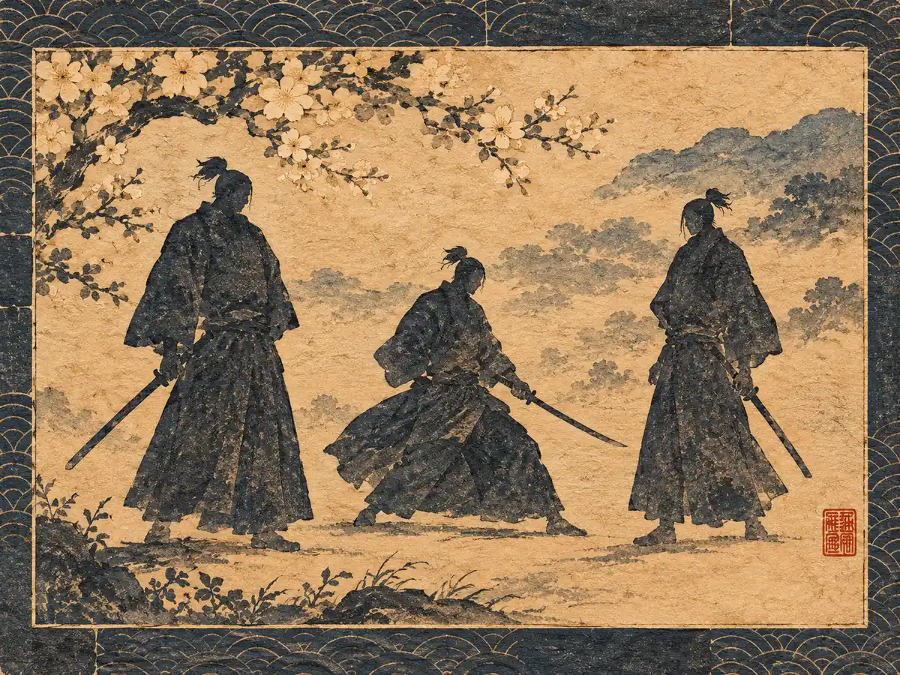
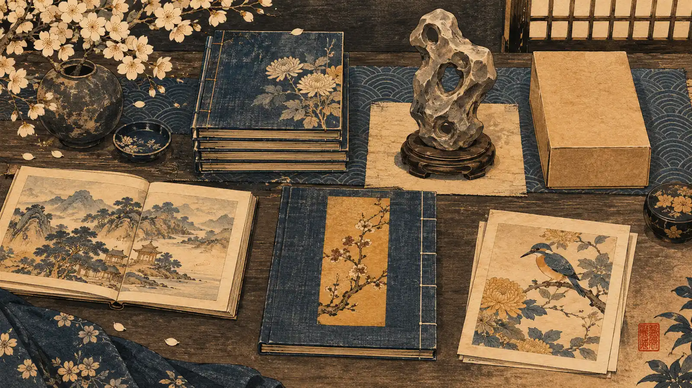
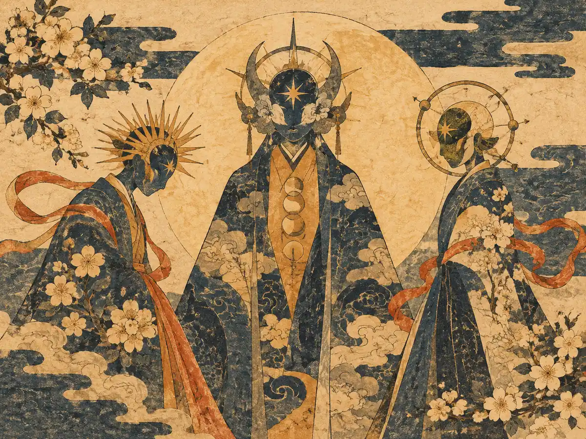

01
Illustrated lore compendium / Collector vault
Browse the lore index by Hashira, Upper Moon, breathing lore and collected volumes. Follow an episode to the manga volume and figure that belong to it.
#ad As an Amazon Associate I earn from qualifying purchases.
Open the Collector's Shelf
Collector's Starting Shelf


Lore index
No records match this view.
This page sets no cookies and runs no analytics. The outbound Amazon links may set their own cookies, which Amazon controls. Nothing is tracked on this page.
Original editorial artwork only. Product links are affiliate search links, not scraped product pages. Prices can change on the store site.